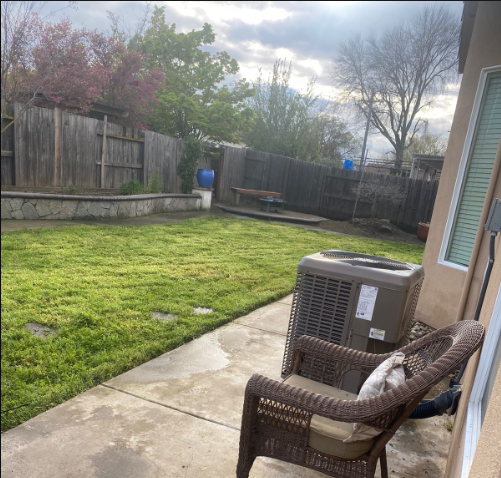
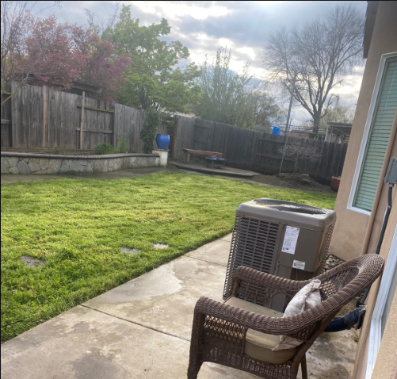

These Are Our
Projects
These Are Our
Projects
Projects
Have A Look At
Our Latest
Projects
Explore our green wonders! As a passionate gardener, I take pride in crafting breathtaking landscapes and nurturing nature's beauty. From vibrant flowerbeds to tranquil Zen gardens, my projects celebrate the art of horticulture. Take a stroll through my digital garden and witness the magic of nature's artistry.
Discover the essence of nature in every project I undertake. As a dedicated gardener, my work is a testament to the harmony between human creativity and the natural world. Explore my portfolio, and let the lush landscapes and vibrant gardens speak to your soul, inviting you to embrace the beauty of the outdoors.
 
